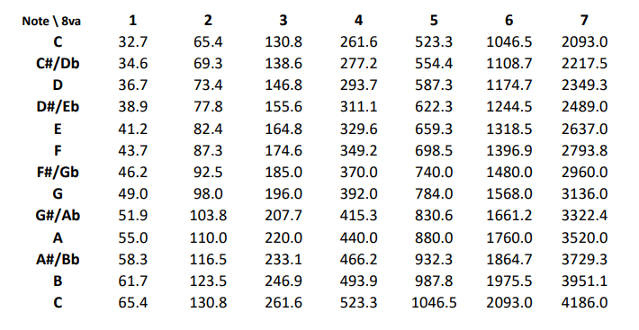

Project References
Here are my references:
- Equal-Tempered Scale Sheet:

- Video for sealing the straw: "Awesome Uses for Drinking Straws"
- Activity 04 - Instrument Development (This helped me understand that longer tubes mean lower frequencies, and vice-versa)